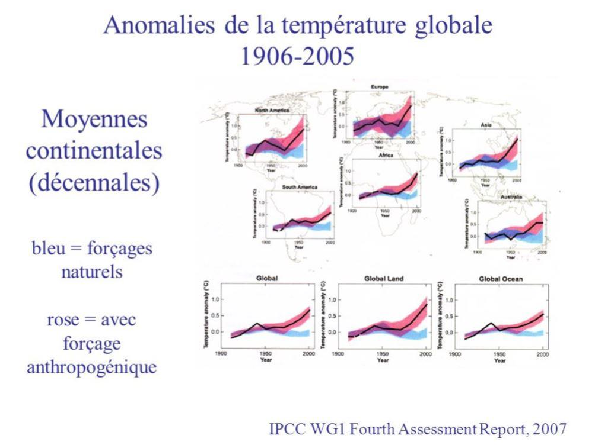

Depuis quelques mois, le feu couvait sous la braise. Comme toujours, il a surgi là où on l'attendait le moins. C'est un mouvement aussi spontané que populaire, appelé « gilets jaunes » qui en fut le catalyseur. Comme souvent, les centres de pouvoir que sont l’Élysée et les ministères, n'ont pas compris ce qui était en train de se produire.
La réponse ne fut naturellement pas adaptée et se borna à un discours se voulant pédagogique sur la nécessité d'agir contre le réchauffement climatique qui « menaçait la planète » et qu'il fallait réduire les émissions de dioxyde de carbone pour la sauver. Dans cette logique propre à nos dirigeants, il fallait donc augmenter les prix de vente pour que les gens achètent moins...
UN PETIT RETOUR EN ARRIÈRE
Lorsqu'en 1967 fut publié le « Rapport sur la Montagne de Fer », traduit en français sous le titre « La paix indésirable1 » on pouvait y lire, page 130 dans le paragraphe « économie » des substituts de la guerre, la recommandation suivante : « les substituts économiques à la guerre doivent satisfaire à deux critères principaux : ces substituts doivent comporter du « gaspillage » et doivent s'exercer à l'extérieur du système normal de l'offre et de la demande »
Hasard ou concomitance, c'est en 1977 que fut créé le WWC (World Wilderness Congress) qui déboucha en 1987 sur la création de la WCB (World Conservation Bank) lors du Congrès de Denver, financée par la Banque Mondiale. Un an plus tard, en 1988, naissait le GIEC (Groupe Intergouvernemental sur l’Évolution du Climat). Ce groupe qui réunit des représentants des gouvernements (et non des scientifiques neutres politiquement) a pour mission d'étudier les changements climatiques uniquement dus à l'activité humaine.
En la matière, nous avons déjà connu des alertes. Le trou dans la couche d'ozone, puis les « pluies acides », qui avaient en commun de trouver leur origine dans l'activité humaine. On remarquera simplement que ces deux phénomènes ont disparu des radars de l'actualité, médiatiquement remplacés par le réchauffement climatique.
LE POSTULAT DE L'ACTIVITÉ HUMAINE
Compte-tenu de son « cahier des charges2», affirmer que seul l'humain est responsable du réchauffement climatique est fortement sujet à interrogations. Le mécanisme décrit par les tenants de cette hypothèse, que ce soient les auteurs des rapports successifs du GIEC, qui n'avaient finalement le choix qu'entre les deux possibilités du refroidissement ou du réchauffement pour justifier de leur existence, ou bien d'autres chercheurs souvent autoproclamés « climatologues », est exactement le même. Le charbon, élément essentiel de la révolution industrielle du XIXème siècle, puis le pétrole, longtemps utilisé dans les lampes, qui devient au début du XXème siècle le carburant du moteur à combustion interne, rejettent dans l'atmosphère, après s'être combinés avec l'oxygène afin de fournir l'énergie motrice, deux composés gazeux. Le premier est la vapeur d'eau, déjà présente en grande quantité dans notre atmosphère, et le dioxyde de carbone, qui était également présent en quantité variable au cours du temps. Ce constat étant fait, il faut démontrer l'impact qu'a sur la température de la planète les rejets de ces gaz. Pour la vapeur d'eau, c'est pratiquement impossible, compte-tenu de l'importance de sa présence dans l'air. Reste le CO2. Qu'est-ce qui pourrait bien relier la température moyenne de la planète à la quantité de ce gaz mesurée dans l'atmosphère ?
Problème ardu, d'autant plus qu'on ne sait pas vraiment comment faire pour mesurer cette température qui varie d'un endroit à l'autre et d'un instant à l'autre. Ce problème de méthodologie est fondamental. Suivant la façon de faire, on obtiendra des résultats très différents. Mais apparemment, l'importance d'arriver à la bonne conclusion l'a emporté sur toute autre considération.
Le développement de la mesure des longueurs d'onde a permis de constater que le gaz carbonique pouvait bloquer certains rayons de type « infra-rouge » et les réémettre. Par analogie avec les serres de nos jardin, destinées à préserver nos végétaux des basses températures, on a donc parlé des « gaz à effet de serre ».
Nous avions les bases de la réflexion qui consistait à justifier une augmentation de la température de la planète par des relevés transcrits sur les courbes appropriées d'un coté et l'augmentation de la concentration de CO2 dans l'atmosphère de l'autre. Restait simplement à utiliser les bons axes de coordonnées, ce qui fut fait en 2004 avec le tableau suivant montrant la corrélation entre la concentration en CO2 et la température.
Ces tracés indiquent effectivement une similitude entre les deux phénomènes. Une remarque cependant, l'échelle de temps (en bas) est très resserrée puisqu'elle part de -400.000 ans, ce qui peut masquer l'ordre des choses. C'est sur des courbes de ce type que s'appuie le GIEC pour affirmer que le CO2 d'origine humaine est la cause du réchauffement3.
UNE CONCLUSION CONTESTÉE
Pouvant satisfaire, dans un premier temps, un grand public non- nécessairement familiarisé avec la démarche scientifique, cette argumentation pouvait paraître convaincante, d'autant plus qu'elle était copieusement relayée par la quasi-totalité des médias « mainstream ». Cependant, quelques voix se sont élevées depuis une vingtaine d'années pour dénoncer ces conclusions hâtives et peu conformes à la démarche scientifique, qui impose une expérience « cruciale 4» pour valider une théorie.
Parmi celles-ci, celle de Vincent Courtillot, chercheur en géophysique, qui a donné depuis 2009 une série de conférences sur le sujet5.
Il a cherché à savoir comment on s'y était pris pour établir les relevés de température qui ont permis d'établir les différentes courbes, et notamment quelle était la méthodologie employée pour faire rentrer dans le calcul les températures moyennes des océans, qui représentent 71 % de la surface de la Terre. N'ayant pas obtenu de réponse satisfaisante, il a effectué ses propres recherches, accompagné par le reste de son équipe.
Cela lui a permis d'émettre une hypothèse qui était très différente des conclusions du GIEC. S'inspirant des travaux de Milankovitch6, il constata qu'il existait des cycles d'environ 100.000 ans durant laquelle la Terre se réchauffait et se refroidissait alternativement. Milankovitch avait mis en évidence la corrélation de ces cycles thermiques avec la trajectoire décrite par la Terre autour du Soleil, due au fait que la présence des autres planètes solaires influait sur celle-ci en la rapprochant ou l'éloignant du Soleil, ce qui augmentait ou diminuait les quantités de chaleur reçues par notre planète.
Connaissant ainsi les périodes durant laquelle la Terre se réchauffait et se refroidissait, Vincent Courtillot superposa à celles-ci les courbes de la concentration du CO2 et se rendit compte que l'augmentation de la concentration de CO2 suivait d'environ 800 ans l'apparition d'un réchauffement.
Il y a donc une inversion de la cause et de l'effet. La planète se réchauffe et, au cours de ce réchauffement, la concentration en CO2 augmente. Cela provient du fait que les océans sont les principaux réservoirs de CO2 et que celui-ci est libéré lorsque la température augmente. Or, il se trouve que l'inertie thermique des océans est plus importante que celle de la terre ferme et qu'ils mettent plus longtemps à ce refroidir.
UN PHÉNOMÈNE CAPITAL
Ce retard de refroidissement des océans explique pourquoi la température moyenne de la planète peut stagner, voire décroître, alors que la concentration en CO2 continue d'augmenter. Et c'est là toute la différence avec l'hypothèse faite par le GIEC. Le CO2 n'est pas la source de l'augmentation de températures (ou du moins pas la seule source) mais sa conséquence. Bien sûr, cela ne contredit pas l'effet de serre du CO2, mais en limite la portée. Il n'était guère concevable que les variations de l'orbite terrestre n'aient aucune conséquence sur la température. L'effet de serre a probablement aussi un effet, mais pas aussi important que l'affirme le GIEC.
Vincent Courtillot montre également un certain nombre d'enregistrements des températures depuis 1850 qui se superposent presque exactement avec les variations d'activité à la surface du soleil, ce qui laisse penser que le rôle du CO2 n'est primordial.

L'EFFET CO2 N'EST PAS ÉVIDENT
Notre planète, d'après les mesures effectuées, a déjà connu des « épisodes CO2 » plus importants. Or, l'homme n'était pas encore apparu, ce qui peut signifier qu'il existe des phénomènes autorégulateurs qui limitent les amplitudes de températures, ce qui porte à croire que l'effet de serre n'est peut-être pas linéaire dans le temps et qu'il aurait tendance, sinon à diminuer, mais du moins ne pas augmenter au delà d'une certaine concentration dans l'atmosphère. Vincent Courtillot fournit à ce sujet une explication qui semble plausible : des récentes mesures faites à partir de satellites montrent que l’énergie solaire reçue par la terre par seconde par mètre carré est de l'ordre de 1360 W/M² et qu'elle fluctue avec une période de 11 ans. L'étude de la variation des minimum est significative de la tendance à long terme mais elle ne permettait pas de la déterminer en raison des trop faibles variations (moins de 0,1 W/M²). Cela avait fait dire aux tenants du rôle prépondérant du CO2 que la variation de ce niveau d'énergie ne permettait pas au Soleil d'influencer la température de la planète telle qu'elle variait suivant les relevés effectués (voir la 41ème minute de la vidéo de la conférence) Or, les satellites n'avaient pas été calibrés entre eux et cela introduisait une erreur importante. Après recalibration des satellites par les chercheurs, le résultat était multiplié par 10 et montrait la cohérence entre l'énergie fournie par le Soleil et les variations de température mesurées.
Là encore, le rôle du CO2 n'apparait pas clairement.
ET L'EFFET DE SERRE, DANS TOUT ÇA ?
L'effet de serre existe bien. Et heureusement, car sans lui, Vincent Courtillot nous dit que la température actuelle de la surface planète serait inférieure d'environ 30°C.
Le dessin ci-dessous, utilisé pour illustrer les propos du conférencier, montre les directions des flux de chaleur et la quantité d'énergie par unité de surface qu'ils mettent en jeu. Pardonnez-moi le coté ardu du propos, mais le phénomène décrit est complexe.
La partie de gauche montre le flux « A » qui provient du Soleil et arrive sur la surface de la planète.
Sur les 342 W/M² émis, seuls 168 (valeur moyenne) viennent chauffer la surface, la différence étant absorbée par les nuages, ou réfléchie par le sol et les nuages (phénomène d' « albedo »)
De son côté, le sol renvoie plusieurs flux de chaleur. H est la chaleur transmise par conduction et G est la chaleur latente d'évaporation. Le flux I représente le rayonnement infra-rouge émis par le sol et se subdivise entre les flux B et C. B passe au travers des nuages et va rejoindre le flux F , rayonnement infrarouge émis par les nuages pour donner E, rayonnement infrarouge émis vers l'espace. La partie D, la plus à droite, représente la part réémise vers le sol due à l'effet de serre des gaz contenus dans l'atmosphère. Ouf, j'ai fini...
Ce schéma est assez complexe mais permet de bien comprendre les mécanismes en jeu. En commentant ce dessin, Vincent Courtillot observe que, dans les modèles mathématiques internationaux utilisés par le GIEC pour étudier ces phénomènes, les nuages n'ont pas été pris en compte car on ne connaissait pas la distribution des nuages autour de la Terre avant de pouvoir les photographier par les satellites. Il fait également observer qu'une faible variation de la couverture nuageuse, qu'il évalue à 3 %, suffirait pour avoir à lui seul le même effet que celui dû à l'augmentation du CO2 (minute 44 de la vidéo).
QU'OBSERVE-T-ON AUJOURD'HUI ?
Les différents rapports émis par le GIEC nous disent, comme preuve du réchauffement climatique lié à l'effet de serre du CO2, que le niveau des océans monte en raison de la fonte des glaces de la banquise. Dans une vidéo réalisée par l'AFCO (Association Française des Climatologues Optimistes). François Gervais, professeur d'université émérite, fait le point sur ce phénomène7 :
La Terre a connu une période de réchauffement qui a commencé en 1694 et qui est, selon lui, sur le point de se terminer. Les relevés d'activité solaires montre une augmentation durant la seconde moitié du 20ème siècle et une diminution à partir de la fin du siècle (1998) Les photos satellites qui permettent d'évaluer la surface de banquise (arctique et antarctique) montre que celle-ci, après avoir diminué, se situe en 2015 au même niveau qu'en 1979 (date des premières observations)
Comme on le voit, le réchauffement climatique observé durant la seconde moitié du siècle dernier n'est contesté par personne. Seulement, il semble de plus en plus vraisemblable que ce réchauffement ait cessé depuis plus d'une dizaine d'années. La question qui se pose est de savoir quelle va être la tendance future. Si on s'inspire des modèles actuels, il est possible, voire probable, que ce refroidissement continue par analogie avec les différents cycles observés.
POURQUOI DÉFENDRE À TOUT PRIX L'HYPOTHÈSE D'UN RÉCHAUFFEMENT PERSISTANT ?
Il paraît utile, pour tenter de répondre à cette question, de se reporter au début de cet article, au congrès de Denver qui a vu la « financiarisation » de l'environnement. Dans son livre « Currencies War8 », traduit en français sous le titre « la guerre des monnaies » Hong Bing Song écrit que
« En redoublant d’efforts de propagande sur les méfaits de la pollution, on pourrait atteindre un effet psychologique aussi effroyable que la fin du monde après la guerre nucléaire » Alors, hasard ou pas, en septembre 1987, à Denver, dans le Colorado, se tint la 4ème réunion du « World Wilderness Congress » (Congrès Mondial de la Vie Sauvage).
2000 participants représentant une soixantaine de pays y assistaient. Environ 1500 d’entre eux furent assez surpris de recevoir un document intitulé : « Déclaration de Denver pour la préservation de la vie mondiale » qui préconisait la création de la « World Conservation Bank ». La différence par rapport aux trois premières réunions fut la présence de nombreux banquiers. Cette réunion fut dirigée par Edmond de Rothschild et David Rockefeller. »
Ainsi donc les méfaits de la pollution pourraient inspirer des grandes frayeurs aux peuples de la Terre qui pourraient croire que c'est la vie même à la surface de la planète qui pourrait se trouver menacée. Rappelons que ceci se passait en 1967, un an avant la création du GIEC. Que s'est-il passé ensuite ? Le premier rapport officiel du GIEC date de 1990, deux ans après sa création. On y trouve à la page 18 :
« les émissions dues aux activités humaines accroissent sensiblement la concentration dans l'atmosphère des gaz à effet de serre : dioxyde de carbone (CO2), méthane (CH4), chlorofluorocarbones (CFC) et oxyde nitreux (N,O); les études de modélisation, observations et analyses de sensibilité semblent indiquer que la hausse de la température moyenne mondiale en surface, qui résulterait d'un doublement de la concentration de CO2 resterait dans une fourchette comprise entre 1,5°C et 4,5 °C »
Remarquez bien qu'on ne donne pas de date. On se contente de dire que le doublement du CO2 produirait une élévation de température comprise entre 1,5 et 4,5 °C sans préciser quelle est la température de départ.
En 1995, la menace se précise un peu :
« Selon les informations limitées fournies par différents indicateurs climatiques, la température de l'air, en moyenne globale, est au moins aussi élevée au XXème siècle qu'elle ne l'a été à toute autre époque entre la période actuelle et 1400 apr. J.-C. Les données antérieures à 1400 sont trop fragmentaires pour permettre une évaluation fiable de la température moyenne du globe »
En 2001, la notion de danger apparaît :
« Le Troisième rapport d’évaluation (TRE) fournit aux décideurs une évaluation des nouvelles données scientifiques et des preuves susceptibles de les aider à déterminer ce qui constitue une « perturbation anthropique dangereuse du système climatique »
Enfin, en 2007, le rapport du GIEC est carrément alarmiste :
« Le réchauffement du système climatique est sans équivoque. On note déjà, à l’échelle du globe, une hausse des températures moyennes de l’atmosphère et de l’océan, une fonte massive de la neige et de la glace et une élévation du niveau moyen de la mer »
Toujours dans le même rapport, quelques lignes plus loin :
«Les observations effectuées sur tous les continents et dans la plupart des océans montrent qu’une multitude de systèmes naturels sont touchés par les changements climatiques régionaux, en particulier par la hausse des températures »
LE VIRAGE FINANCIER
En 2008, une note9 est publiée par la SMF (Social Market Foundation) portant sur le commerce des émissions au niveau mondial .
Son auteur s'appelle Simon Linnett et il est le fondé de pouvoir de la banque Rothschild à la City de Londres. Le sommaire est très explicite :
« In this essay, the author begins by stating that the global problem of climate change can only be solved on a global, international level, and asserts that carbon trading is the most effective method to do this. He discusses the benefits of cap-and-trade over other forms of regulation, and outlines the legal framework which would ensure that the business community participates whole-heartedly in expanded schemes. He also emphasises the need to have a scheme which encompasses all emissions, regardless of industry sector, and outlines how a truly global emissions trading scheme may be brought about »
Voici la traduction :
« Dans cet essai, l'auteur commence par établir que le changement climatique est un problème mondial qui ne peut trouver une solution que sur le plan mondial et affirme que le marché du carbone est la méthode la plus efficace pour y arriver. Il compare l'intérêt que présente un système de plafonnement ( du carbone émis NDR) sur toutes les autres formes de réglementation et trace le cadre légal qui permettra au monde des affaires d'accepter de plein gré ce schéma élargi.
Il souligne également la nécessité d'avoir un plan qui inclut toutes les émissions, sans distinction du secteur industriel émetteur et esquisse les grandes lignes pour arriver à un véritable marché des émissions au niveau mondial »
Nous touchons au cœur du projet. Pour résoudre un problème mondial, il faut une autorité mondiale qui puisse régir les émissions de carbone. La parution de cette note en 2008 la situe juste après le rapport du GIEC de 2007 et avant la Conférence de Copenhague en 200910 (COP 15). Cette conférence était importante en raison du Protocole de Kyoto signé en 1997 et qui devait arriver à échéance en 2012. Il fallait donc trouver un accord le plus étendu possible au niveau mondial. En préambule, les 191 pays réunis du 07 au 19 décembre 2009 devaient se mettre d'accord sur les 3 points suivants :
la définition des objectifs de réduction des émissions de GES pour les pays du Nord et du Sud,
un accord sur le financement à court et long termes et un consensus sur la gouvernance de ce financement,
la gestion des droits de propriété intellectuelle concernant le transfert international de technologies « propres ».
Le caractère « mondialiste » de la démarche étant dès lors affirmé, il ne restait plus qu'à mettre en place la conversion financière de l'émission des gaz à effet de serre pour chaque pays. C'est ainsi qu'est née la « taxe carbone11 » Cette taxe, dont le montant est fixé dans chaque pays, devrait en théorie financer les programmes dits « de transition énergétique » qui devraient permettre progressivement la « décarbonisation » de l'énergie en utilisant d'autres sources que celles des « carburants fossiles », c'est à dire essentiellement le charbon, le pétrole et le gaz. Mais pour fonctionner d'une façon internationale, il restait à trouver un organisme régulateur capable d'agir au niveau mondial. C'est ainsi qu'est née l'idée d'une « banque centrale du carbone 12»
UN OBJECTIF À LA FOIS POLITIQUE ET FINANCIER
Sous couvert de réduire les émissions de CO2 présentées comme le principal danger menaçant notre planète, après avoir persuadé les opinions publiques internationales de l'ampleur de la catastrophe si on ne pouvait se mettre d'accord pour les limiter, il convenait de franchir le pas sans pour autant affecter la croissance de l'économie. L'idée d'une « bourse du carbone » fit son chemin. Il fallait en effet, pour ne pas décourager les investisseurs qui n'aiment guère les marchés trop fluctuants, pouvoir disposer d'une sorte de réserve de « droits à polluer ». Car la taxe carbone, telle qu'elle est conçue, n'est pas autre chose. Qui donc pourrait décider d'émettre ou de retirer du marché ces droits ? Une banque centrale, naturellement !
Chaque pays se verrait doter d'un certain quota, analogue à une quantité de monnaie, et si ce quota ne suffisait pas, il pourrait alors racheter à d'autres pays moins « pollueurs » les droits qu'ils n'utilisent pas.
Tout le monde serait content car les pays pollueurs pourraient ainsi continuer de polluer et les autres recevraient de l'argent.
Double avantage : un pas important vers la mondialisation et une source de profit pour l'organisme qui ne manquerait pas de prélever sa part sur les transactions financières ainsi réalisées.
QUELLE CONCLUSION EN TIRER ?
Ce plan s'est -il élaboré progressivement ou bien était -il déjà concocté dès le départ ? Difficile à dire. On peut considérer que le trou dans la couche d'ozone et les fameuses pluies acides n'étaient qu'une sorte de « tir de réglage » afin d'évaluer la sensibilité de l'opinion publique et d'en déduire jusqu'où on pourrait aller dans ce domaine. Les mouvements écologistes apparus durant la guerre froide pouvaient servir de relais car les multinationales du pétrole incarnaient parfaitement ce monde capitaliste du profit à outrance qu'ils voulaient combattre. Par ailleurs, la raréfaction prévue de la ressource pétrolière impliquait de rechercher des sources d'énergie de substitution, si possible autres que le nucléaire en raison de la perméabilité du nucléaire civil avec celle du militaire et qu'il valait mieux contenir ce risque pour éviter la dissémination.
Hasard ou déterminisme, les conditions édictées dans le rapport de la montagne de fer cité au début sembles satisfaites :
Le gaspillage est bien présent, notamment avec ces immenses parcs d'éoliennes qui nécessitent des investissements démesurés à rentabilité très hypothétique et la peur de la catastrophe climatique, permet de sortir du traditionnel duo « offre-demande » en raison de la pression dissymétrique qu'elle exerce, rendant quasi-impossible tout renoncement.
On ne peut que reconnaître l'efficacité d'un tel plan, dont les promoteurs ont eu l'intelligence de l'étaler sur plusieurs décennies, ce qui leur évitera d'avoir des comptes à rendre dans le futur. Si, dans un futur plus ou moins proche comme on peut le penser, à la période réchauffement climatique -dont les causes principales ne sont pas dues à l'activité humaine- succédera une période de refroidissement, on pourra toujours en imputer la cause au succès des mesures préconisées dans la lutte contre le réchauffement …
J.G.
Notes :
1 Voir les revues Méthodes N° 6, 7 et 9, dans lesquelles ce sujet est développé. « La paix indésirable » a été publié chez Calmann-Lévy et traduit de l'américain par Jean Bloch-Michel
5 Je vous recommande le passage entre la 26ème et la 31ème minute : https://www.youtube.com/watch?v=iOz8pmG1mnw&fbclid=IwAR0VXzxnPhetoxgAOr6_pVuRqmwX4wi3RioTnwPXCg_W8t854xb6D_MOvGU
6 https://www.youtube.com/watch?v=MXcY8Cf6hsI
7 https://www.youtube.com/watch?v=HfLqliWFJx0
8 « Guerre des monnaies » Editions « le retour aux sources » auteur Hong Bing Song

Partager cette page